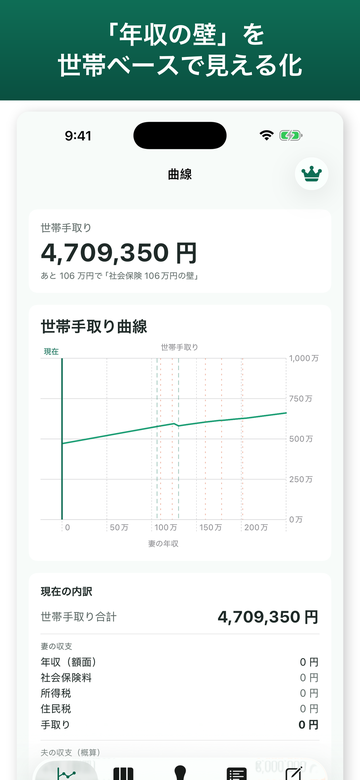
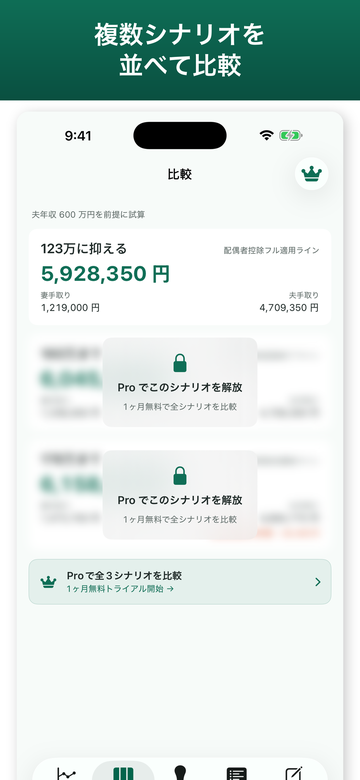
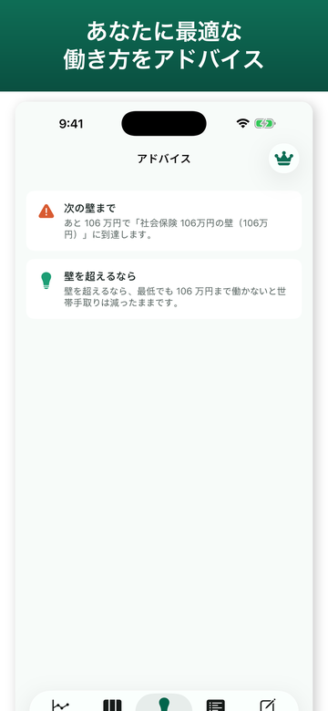

配偶者控除・社会保険・住民税の「壁」を、
世帯ベースで一画面に可視化。
手取りが最大になる働き方を、即提案します。
iOS 16以降対応 · 端末内処理（サーバー送信なし）· 無料で始められます
| 対応OS | iOS 16.0 以降 |
|---|---|
| 価格 | 無料（アプリ内課金あり） |
| バージョン | 1.0 |
| サイズ | 約 1 MB |
| カテゴリ | ファイナンス |
| 対象年齢 | 4+ |
| 対象ユーザー | 扶養内・パートで働く世帯 |
| データの扱い | 入力は端末内で計算・外部送信なし |
| 開発者 | freetokyo |
| 最終更新 | 2026-06-08 |



あなたと配偶者の年収帯ごとの世帯手取りを Swift Charts で描画。壁の位置と「ヘコみ」が一目でわかります。
国税庁・年金機構の最新制度に基づき所得税・住民税・社会保険を世帯ベースで計算。配偶者控除・特別控除も網羅。
「夫 500万・妻 100万」vs「夫 500万・妻 130万」など、複数の働き方を並べて手取り差分と税負担を比較。
給与から「あと◯万円で壁を超える」を判定し通知。年末調整前の働き方調整に役立ちます。
配偶者の年収を 0〜250万円までスライドさせると、世帯全体の手取りがリアルタイムで動きます。 106・110・123・130・160・201.6万の各壁を色付きで明示。「実は壁を超えた方が得」のラインも一目でわかります。
現在の働き方と、もし配偶者がパート時間を増やしたら／フルタイムに切り替えたら、を保存して比較。 所得税・住民税・社保それぞれの内訳と、世帯総手取りの差を金額で提示します。
アプリ内の各「壁」の詳細から、国税庁・年金機構の根拠ページへワンタップで遷移。 制度の正確性を担保し、ご自身でも一次情報を確認できます。
基本機能は無料、高度なシナリオ比較・通知はプレミアムで開放されます。
購入はApp Storeを通じて行われ、Appleの利用規約が適用されます。
自動更新サブスクリプションはいつでもキャンセルできます（iPhone「設定」→「Apple ID」→「サブスクリプション」）。